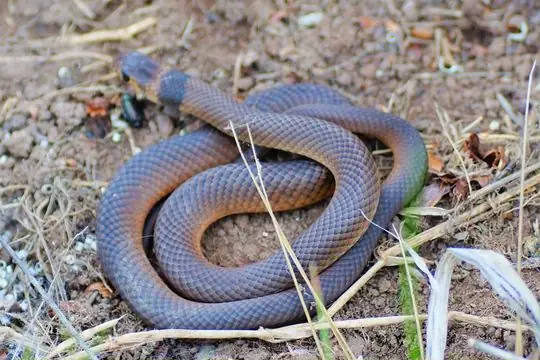
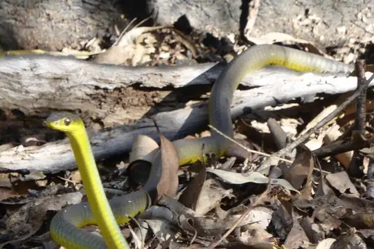
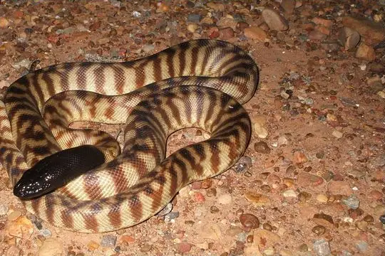
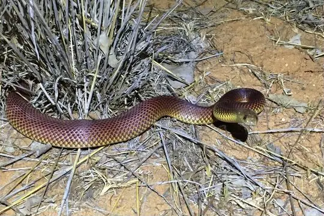
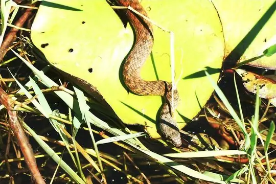
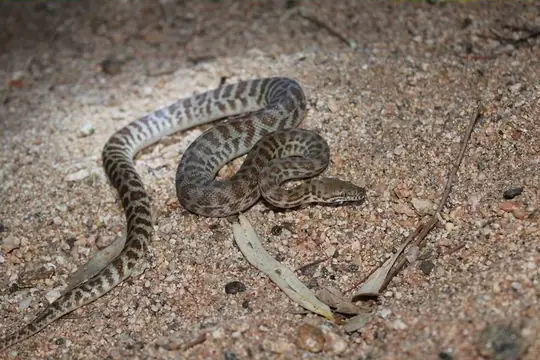
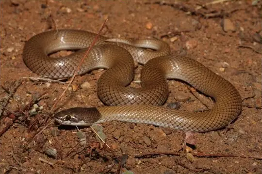
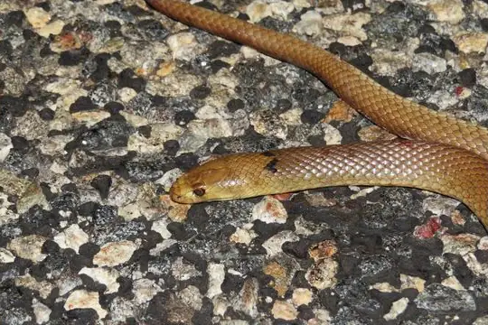

Snakes of Northern Territory
A state or territory of Australia
55 snake species are recorded in Northern Territory, a state or territory of Australia, in SnakeList: 33 venomous and 22 non-venomous, from 6 families.
- 55species
- 33venomous
- 22non-venomous
- 6families
- 10found only here
SnakeList records where snakes live by country and by state or territory, not by exact spot, so a species listed here may live in only part of Northern Territory. All snakes of Australia.
Most widely recorded
The species here that have research-grade iNaturalist records in the most places across their whole range - not just in Northern Territory. That shows how often people have photographed them, not how many live here.

Eastern Brown SnakePseudonaja textilis
Green Tree SnakeDendrelaphis punctulatus
Black-headed PythonAspidites melanocephalus
Mulga SnakePseudechis australis
Mair's KeelbackTropidonophis mairii
Children's PythonAntaresia childreni
Myal SnakeSuta suta
Mengden's GwardarPseudonaja mengdeni
Snake families
Venomous and non-venomous
Venomous: 33Non-venomous: 22
33 are listed by SnakeList as dangerous to people: Arnhem Shovel-nosed Snake Brachyurophis morrisi, Barkly Tableland Death Adder Acanthophis hawkei, Black Whip Snake Demansia vestigiata, Centralian Bandy Bandy Vermicella vermiformis, Coastal Taipan Oxyuranus scutellatus, Desert Death Adder Acanthophis pyrrhus, Eastern Brown Snake Pseudonaja textilis, Grey Whipsnake Demansia simplex, Gwardar (nuchalis) Pseudonaja nuchalis, Half-girdled Snake Brachyurophis semifasciatus, Ingram's Brown Snake Pseudonaja ingrami, Intermediate Bandy Bandy Vermicella intermedia, Mengden's Gwardar Pseudonaja mengdeni, Monk Snake Suta monachus, Mulga Snake Pseudechis australis, Myal Snake Suta suta, Narrow-banded Burrowing Snake Brachyurophis fasciolatus, Northern Bandy Bandy Vermicella multifasciata, Northern Desert Banded Snake Simoselaps anomalus, Northern Shovel-nosed Snake Brachyurophis roperi, Olive Whipsnake Demansia olivacea, Orange-naped Snake Furina ornata, Papuan Death Adder Acanthophis rugosus, Papuan Whip Snake Demansia papuensis, Port Darwin seasnake Hydrelaps darwiniensis, Pygmy Mulga Snake Pseudechis weigeli, Ringed Brown Snake Pseudonaja modesta, Shine's Whipsnake Demansia shinei, Soil-crack Whipsnake Demansia rimicola, Sombre Whipsnake Demansia quaesitor and 3 more.
Found only here
Recorded in no other state or territory or country in SnakeList’s data. That may mean it lives only here, but it can also mean it has not been recorded elsewhere yet.
- Arnhem Shovel-nosed Snake Brachyurophis morrisi
- Barkly Tableland Death Adder Acanthophis hawkei
- Centralian Bandy Bandy Vermicella vermiformis
- Centralian Blind Snake Anilios centralis
- Fannie Bay Blind Snake Anilios nema
- Grey Whipsnake Demansia simplex
- Intermediate Bandy Bandy Vermicella intermedia
- Northern Bandy Bandy Vermicella multifasciata
- Oenpelli Python Nyctophilopython oenpelliensis
- Shine's Whipsnake Demansia shinei
Habitats (rough estimate)
How many of its living snakes have each kind of habitat in SnakeList’s estimate. That estimate comes from every country, state and province where each snake is recorded - not from a survey of Northern Territory, and not checked species by species.
Who described them
The scientists who first described its most widely recorded snakes, and when.
- Eastern Brown Snake Pseudonaja textilis - described by Duméril, Bibron & Duméril in 1854 (under another genus name)
- Green Tree Snake Dendrelaphis punctulatus -
- Black-headed Python Aspidites melanocephalus -
- Mulga Snake Pseudechis australis -
- Mair's Keelback Tropidonophis mairii -
- Children's Python Antaresia childreni -
- Myal Snake Suta suta -
- Mengden's Gwardar Pseudonaja mengdeni -
Names and dates come from SnakeList’s reviewed species accounts; the others are looked up on Wikidata (CC0) when this page opens.
Neighbouring states and territories
Places in SnakeList that share a border with Northern Territory.
- Queensland 94 species
All 55 species
- Arnhem Shovel-nosed Snake Brachyurophis morrisi venomous
- Australian Bokadam Cerberus australis
- Barkly Tableland Death Adder Acanthophis hawkei venomous
- Black Whip Snake Demansia vestigiata venomous
- Black-headed Python Aspidites melanocephalus
- Brown Water Python Liasis fuscus
- Centralian Bandy Bandy Vermicella vermiformis venomous
- Centralian Blind Snake Anilios centralis
- Centralian Carpet Python Morelia bredli
- Children's Python Antaresia childreni
- Claw-snouted Blind Snake Anilios unguirostris
- Coastal Taipan Oxyuranus scutellatus venomous
- Crab-eating Snake Fordonia leucobalia
- Desert Death Adder Acanthophis pyrrhus venomous
- Eastern Brown Snake Pseudonaja textilis venomous
- Fannie Bay Blind Snake Anilios nema
- Filesnake Acrochordus arafurae
- Green Tree Snake Dendrelaphis punctulatus
- Grey Whipsnake Demansia simplex venomous
- Gwardar (nuchalis) Pseudonaja nuchalis venomous
- Half-girdled Snake Brachyurophis semifasciatus venomous
- Ingram's Brown Snake Pseudonaja ingrami venomous
- Interior Blind Snake Anilios endoterus
- Intermediate Bandy Bandy Vermicella intermedia venomous
- Long-beaked Blind Snake Anilios grypus
- Macleay's Mud Snake Pseudoferania polylepis
- Mair's Keelback Tropidonophis mairii
- Mengden's Gwardar Pseudonaja mengdeni venomous
- Monk Snake Suta monachus venomous
- Mulga Snake Pseudechis australis venomous
- Myal Snake Suta suta venomous
- Narrow-banded Burrowing Snake Brachyurophis fasciolatus venomous
- Northern Bandy Bandy Vermicella multifasciata venomous
- Northern Blind Snake (diversus) Anilios diversus
- Northern Desert Banded Snake Simoselaps anomalus venomous
- Northern Shovel-nosed Snake Brachyurophis roperi venomous
- Oenpelli Python Nyctophilopython oenpelliensis
- Olive Python Liasis olivaceus
- Olive Whipsnake Demansia olivacea venomous
- Orange-naped Snake Furina ornata venomous
- Papuan Death Adder Acanthophis rugosus venomous
- Papuan Whip Snake Demansia papuensis venomous
- Port Darwin seasnake Hydrelaps darwiniensis venomous
- Pygmy Mulga Snake Pseudechis weigeli venomous
- Richardson's mangrove snake Myron richardsonii
- Ringed Brown Snake Pseudonaja modesta venomous
- Shine's Whipsnake Demansia shinei venomous
- Slaty-grey snake Stegonotus australis
- Soil-crack Whipsnake Demansia rimicola venomous
- Sombre Whipsnake Demansia quaesitor venomous
- Spotted Snake Suta punctata venomous
- Top End Blind Snake Anilios guentheri
- Unbanded Shovel-nosed Snake Brachyurophis incinctus venomous
- Western Carpentaria Snake Cryptophis pallidiceps venomous
- Woma Aspidites ramsayi
No snake here matches that.